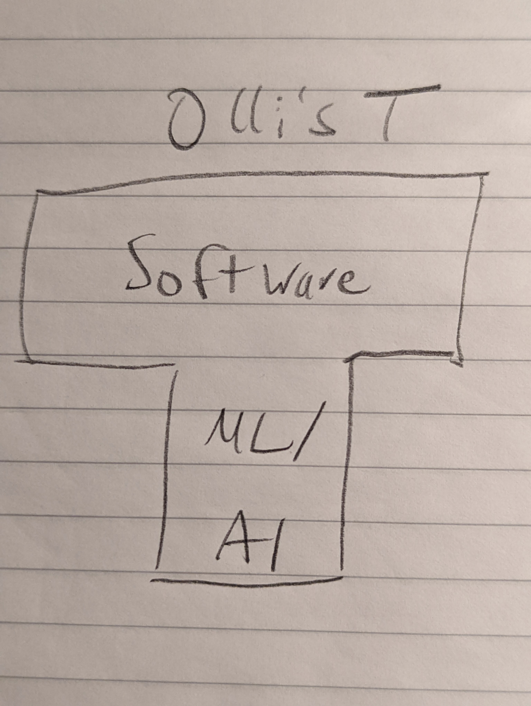

# Resilient Machine Learning Oliver Zeigermann https://dsco.usfdatainstitute.org Slides: https://bit.ly/dsco-resiliency-2023 <!-- https://djcordhose.github.io/ml-resources/2023-booster.html --> <!-- -->
### Who is Olli <div style="display: flex;"> <div style="flex: 50%;">  </div> <div style="flex: 50%; font-size: x-large;"> <img src='img/olli-opa.jpeg'> </div> </div> <p> <a target="_blank" href="mailto:oliver.zeigermann@openknowledge.de">Oliver Zeigermann</a>: Blue Collar Architect(ML)@<a href='https://www.openknowledge.de/'>OPEN KNOWLEDGE</a> </p>
Questions and discussions are welcome *at any time*
### Gauge by show of hands What do you think when you think about someone doing architectural work? * Probably can't code * Maybe used to code * Can not go beyond the level of boxes and arrows * Can talk, but not act * Tries to deflect responsibility
## Agenda 1. managing uncertainty 1. adversarial attacks and outlier detection 1. out-of-distribution robustness 1. drift and monitoring 1. unwanted bias 1. stability 1. fallbacks and ensembles
# Thanks a lot ## Software Architecture is not a swearword Stay in Contact https://www.linkedin.com/in/oliver-zeigermann-34989773/ oliver.zeigermann@openknowledge.de Twitter: @DJCordhose Slides: https://bit.ly/booster-arch-2023